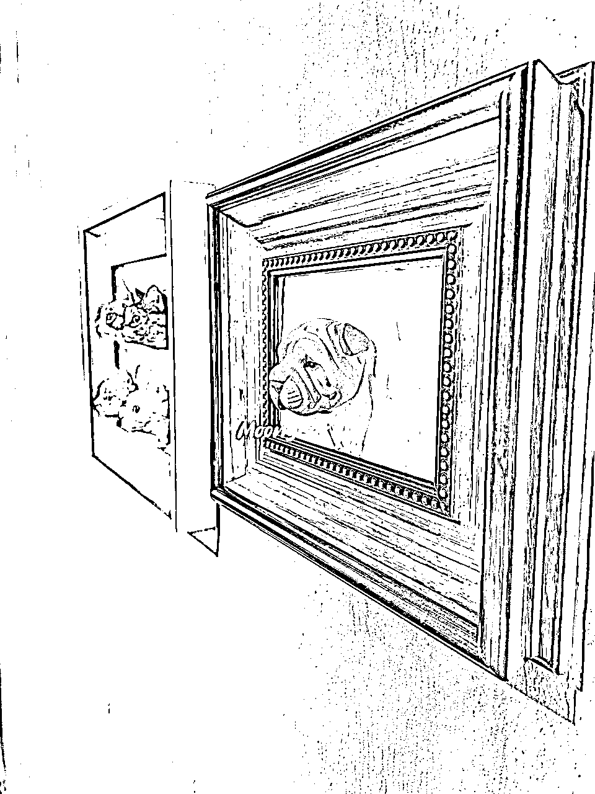
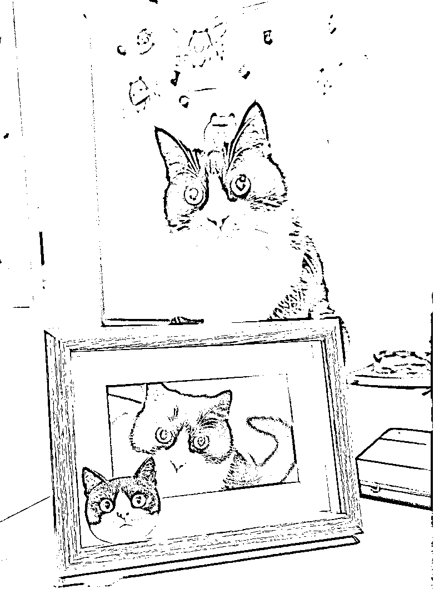

来源：https://yxn0b6ntbk9.feishu.cn/docx/BcaodihC6oDBVzxezrRc6nPHnaf
感谢生财。在朋友的推荐下加入，瞬间得到了海量认知。
尤其是芷蓝写的创业心法，属实有点拨云见日的味道。从中看见了自己过去创业中的很多问题和做的不够的地方。
无以为报，就把自己的创业经历整体复盘一下，当作对上一段创业的总结，画上句号。
这段创业经历非常典型，该踩的坑是一个都没落下，希望对还在路上的圈友有一些帮助。
关于我
我是洛更，24岁在互联网大厂做商业产品经理，年薪60+，背靠大厂资源，从0-1做出营收数10亿的广告产品。
22年辞职创业，方向是兴趣电商，自研产品，宠物定制工艺品。
下面是我如何把一个单品做到年销售额近200W，又放手全过程。
20年疫情大量企业被迫采取居家办公，我私交要好的研究生班长，在闲鱼上做二手笔记本生意，迎来了爆发性的增长，做到了Top3，那年干了几百万的利润。对我产生了非常大的冲击。
也让我原本坚定不移的大厂升职加薪打怪，一条路走到黑的想法产生了动摇。
刚好那一年负责的应用 DAU 腰斩，愈发认为大部分互联网大厂未来进入存量时代，没有业绩，大家都卡在原地无法动弹。
所谓建造一座桥需要1w人，维护一座桥只需要1个人，未来必然有一大批互联网人会失业。所以也更加坚定了创业的决心。
遂于22年末辞职投身创业大军。
经历了两位合伙人，和第一位散伙的原因是股权分配，第一次创业没有经验，也不知道能做成什么样子，也都是第一次做电商，所以采用的是五五分。
如果是第一次创业，不要因为合伙人是好哥们就抹不开面。
在最开始抹不开面子，就不要创业，否则不但生意做不成，兄弟也做不成。
宠物定制工艺品有很多产品，我选择的是香薰宠物头像。
根据客人自己宠物的多角度照片，在数百款宠物脸型中挑选最像的一款，然后由专门培训的画师对照照片进行手工绘制，基本能达到90%以上的相似度。
用途相比一些动辄大几百上千的羊毛毡定制丰富很多，可以做冰箱贴、车载香薰。
我还研发了几种相对高客单一点的套装，背后做一个磁吸相框，可以做桌面摆件或者墙画，一单利润可以多赚50块，很受欢迎。
后期直播带货的时候基本能做到40%的订单都要相框套装。


第一次创业并没有经验可言，选择这个产品也纯粹是因为直觉。
我和我的合伙人都养猫，两个大男人在看到这个产品的瞬间上头，被吸引并且愿意付费。加上本身有美术功底，所以一拍即合，说干就干。
在两人没日没夜研究了两个月的工艺、流程后，并且顺利完成了两轮面试，当时在北京招聘了大约6位画师进行交付的人才储备。
销售渠道方面，靠着我本科舍友的关系，是一个带货能力很强的宠物博主，帮忙拍了一条带货短视频。
视频一发布，瞬间就有客服咨询，并且在很短的时间内，达到了两个人同时接待都接待不过来的地步。还好我们两个人打字速度都很快，但还是因为回复不及时，损失了一部分客户。
当时定价很低，只有一个SKU，89一个，第一天就卖了2万+GMV，真的很开心很感动，觉得一切的付出都值得。
由于每一个宠物头像都是专属定制，工艺比较复杂，还需要培养专门的工人，原材料和其他固定成本也比较高，定价89，整体利润偏低。
不止一次有人建议我涨价，觉得卖的太便宜了。
当时打自然流，卖89，从实际情况来看，相对TB上的一些同行，确实卖的很便宜。
从利润角度，确实不高，均摊到每个员工身上，效益很低。
但是我当时的想法存在很大的问题，比较自我否定：不敢卖高价，觉得这个产品卖不上价，一是体积很小，只有5-7CM。对比很多同类型但是大很多的产品，就是卖不上价。
所以前期一直保持着低利润，但是很好卖。自己一直没有找到高利润也很好卖的方法。（其实是自己觉得不存在这条路，属于固步自封了）
后来当我们找到新的合作伙伴时，他们有成熟的女装直播经验，建议我们打付费直播。
我之前其实多次尝试过直播，都失败了，但是没有打付费。本来并不是很看好，但是还是愿意再尝试。
结果，新的合作伙伴在话术、场景和我之前基本一致的情况下，多了一个付费短视频引流直播间的动作，大概是产品很新颖，ROI直接打到10，瞬间就实现了我一直求而不得的场面：高客单、不愁卖。
价格从89直接卖到138起，最高的套餐可以卖到238。
这个事情给我几个很大的启发：
有一段时间正值暑假，兼职画师极大的扩充了画师团队，订单量涨的比较凶，瞬间涌现了好多竞品，还有恶意差评的。
刚开始必然会很在意，但慢慢就麻了。
因为想要达到60分的程度并不难，所以很多有美术和手工基础的人一看，觉得自己也行。
一天生产一颗螺丝或许很容易，但是一天要生产10万颗螺丝，绝不仅仅是工艺、技术的问题，管理开始入场。
而这恰好是我的优势，在互联网大厂待了这些年，管理的技巧和方法可以说是耳濡目染，标准化、流程化、SOP正是我擅长的。
熬死了好几批模仿者。
大部分生意都存在一个问题——销售和生产如何达到平衡。
第一种情况，一不小心爆单了，但生产跟不上，店铺体验分、口碑各种掉，罚款。有的情况是一条视频爆单了，不得不隐藏掉，等交付的差不多了再放出来，祈祷还能继续跑，很耽误事。
第二种情况，流量起不来，已经招聘的员工就在空转，加之各种固定成本，都是压垮骆驼的最后一根稻草。
所以新手创业，在能力有限的情况下吗，注意绕开这种问题，至少避免一头。相比开工厂，往小了点说作坊，成本都要比单做流量高出几个量级。先专心搞流量，用别人的产品和服务先跑起来。
定制宠物头像这个生意，每一个都需要去根据客户家宠物的照片进行定制。
这个产品有两种交付模式，第一种是根据客户的宠物品种从我们的脸型库里去匹配最像的固定脸型，匹配成功之后再去根据照片绘制，客单价在100-200之间。第二种是3D建模捏脸，客单价在1000元左右。脸型确定好之后，由画师根据客人提供宠物照片，一笔一划手绘，一个熟练的画师一天最多能够画5-8个，产能始终比较受限。
其次一个合格的画师需要很大的精力去进行培养。
我在北京、广州、江门都进行了不同程度上的招聘，我个人要求比较高，平均算下来，5个试稿的才能有筛出1位通过，还是需要两周左右的练习才能达到一个发货的标准。
我也试过找外包，但是手艺好的同行要价太高，PDD上面卖几十块的画的实在没法看。
我甚至还扶持了两个团队专门给我做交付。一个是我表哥在湖南，一个是之前大厂的同事的父母，在辽宁，分别在当地招聘画师，我这边进行远程指导和培训。都以失败告终，产品的质量参差不齐，有时候一个头像要改好多次才敢给客户看，更多的是直接报废，改都改不回来。
不仅没有省心，反而付出了更多的精力在安抚和鼓励这些外包画师身上。最终还是暂停了合作，自己招聘培养。
所以产能端受到比较大的限制，无法跑通后快速放大。
多次尝试放大，多次冲击失败。我在绝望中挣扎了太多次。
刚好期间一直保持合作的一个哥们，之前是找我下单卖海外。有意向收购，于是在一段时间的考虑，不舍和纠结中，选择了放手。
有很多种选择，就是能不能保留这个项目，抽出一部分精力去开拓新的项目呢？
答案应该是否定的，宠物定制这个项目的问题，至少在作坊阶段，必须有一个全职的Owner紧盯不放。需要搞流量、需要培养画师。。。
这里也希望有大佬有类似的项目经验可以多多交流~~
经过这段深刻的创业经历，我深刻反思。
为了在接下来一段创业中，提高成功的概率。
正确的选择，比盲目的努力重要的多！
宠物头像比较小众，受众相对窄。
虽然有引流私域，但宠物定制产品的复购相对低，复购的场景通常是家里有多只宠物，或者要自己买了一个觉得不错，再买一个放车里，或者送朋友。
由于不是刚需，粘性不强。所以就算有更多衍生产品，如宠物肖像画、灯画等，都不太能有效升单和复购。
宠物头像困难点是产能端，每一个都是专属定制，市场上没有特别强的供应链（也可能是我没找到），画师都需要专门招聘和培养，没办法快速放大，跑量的时候束手束脚。
我现在往回看，觉得创业是有关键路径的，就像一个36位的组合密码，知道密码的人一分钟就解开了，不知道的人一辈子也解不开。
要避免重复造轮子，我们之所以成功，是因为站在巨人的肩膀上。
所以我选择参加了6月的航海，视频号带货。
综合看下来，这个项目比较满足我对好项目的要求。
更重要的是，我非常期待航海的旅程。选好一个方向，先链接这个赛道里做的比较出色的人，付费或合作，找人领路。
希望大家都能顺利靠岸，开花结果。也希望结识更多战友，一起生财~
想要吃透做绝，还是得抱团，一起战斗。
欢迎交流。